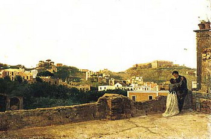
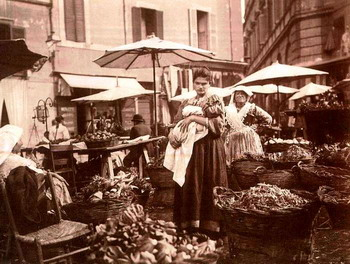

Campagna di Roma
Gledali smo puno slika iz Italije, zajedno sa Harvijevim poetičnim i eruditskim opisima. A gledaćemo ih još meseca dana. On je već na severu, Venecija i Veneto, ali da se vratimo malo do Rima, odnosno njegovog okruženja.
Kad je Goran pre nekog vremena postavio link ka sajtu sa besplatnim knjigama, prodangubila sam tamo izvesno vreme. Najzanimljivija mi je bila knjiga putopisa po Italiji Henri Džejmsa. OK, za sada kopija uspešno miruje u prigodnom folderu, ali jedno poglavlje sam pročitala. Zove se "Roman Rides", a odnosi se na vožnje prirodom oko Rima, poznatom i kao Campagna di Roma. Prevela sam dva mala odeljka, ilustracije radi. I, moram reći, uživala sam i mučila se istovremeno posle dužeg vremena sa debelim rečnikom na krilu, pokušavajući da sklopim rečenice koje će bar delimično odgovarati izuzetnom originalu.
***
"Ima više prave veselosti - uprkos određenoj melanholoji koja je pritajena u svakom objektu u Kampanji (Campagna) - u primitivnim malim tavernama gde će vam biti drago da zastanete i u domaćoj atmosferi, u sumrak, zatražite flašu najboljeg. Najbolje i najgore su u stvari jedno te isto, samo po različitim cenama, i po pravilu vino bianco i vino rosso (retko oboje) su jedino osveženje kojim raspolažu. Oko vrata obično ima neka divlja puzavica, a unutra, pod mračnim svodovima, na neravnom kamenom podu, sa laktovima na stolovima, sedi pola tuceta contadini u indigo jaknama i pantalonama od kozjeg krzna. Tu je obično i grupica dece prosjaka pored vrata u prašnjavim prnjama, sa lepim očima i intenzivnim italijanskim osmehom, koja vas nateraju da zaboravite svoju odluku da ćete učiniti sve što je u vašoj moći da ove, tako drage osobe, odučite od njihovih starih grehova."
"Sigurno je da posebnu lepotu Kampanje najbolje možete osetiti u onim blagim zimskim danima kada su sam kvalitet i intenzitet sunčeve svetlosti dovoljni da pejzaž pretvore u radosti ; vi napravite pauzu na smeđoj travi i, nepomičnima na suncu, ako dovoljno dugo osluškujete, skoro da vam se može učiniti da čujete pucketanje leta. Detalji su ono što se menja iz meseca u mesec, čak iz nedelje u nedelju, i ono što čini vaše povratke na ista mesta stalnom gozbom neočekivanog; glavni obrisi predela, međutim, tokom cele godine zadržavaju istu impresivnu mirnu vedrinu."
Komentari
Ja sam knjigu Portret jedne dame dozivela kao putopis. Malo Engleska, vise Italija, cini mi se Rim.
 RSS feed
RSS feed
 sadržaji se objavljuju pod
sadržaji se objavljuju pod
Komentari
Zbog tehničkih problema komentari stigli do početka jula 2007. su sada u okviru teksta
Yahti | 02.08.07 10:24